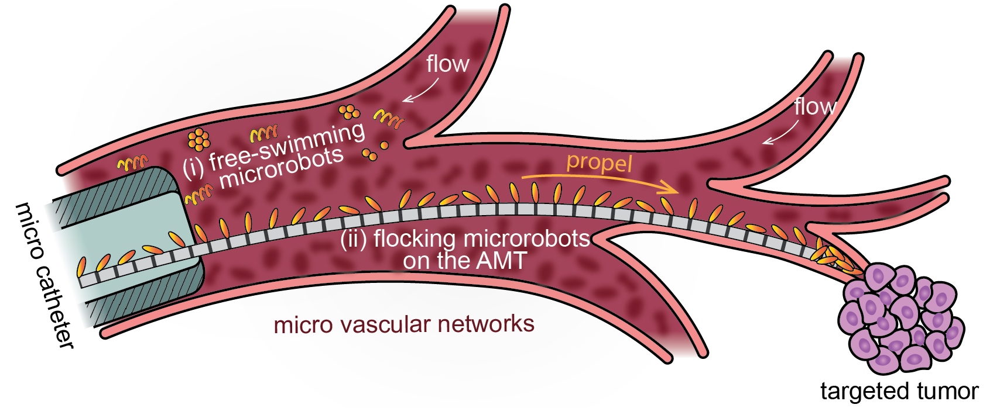
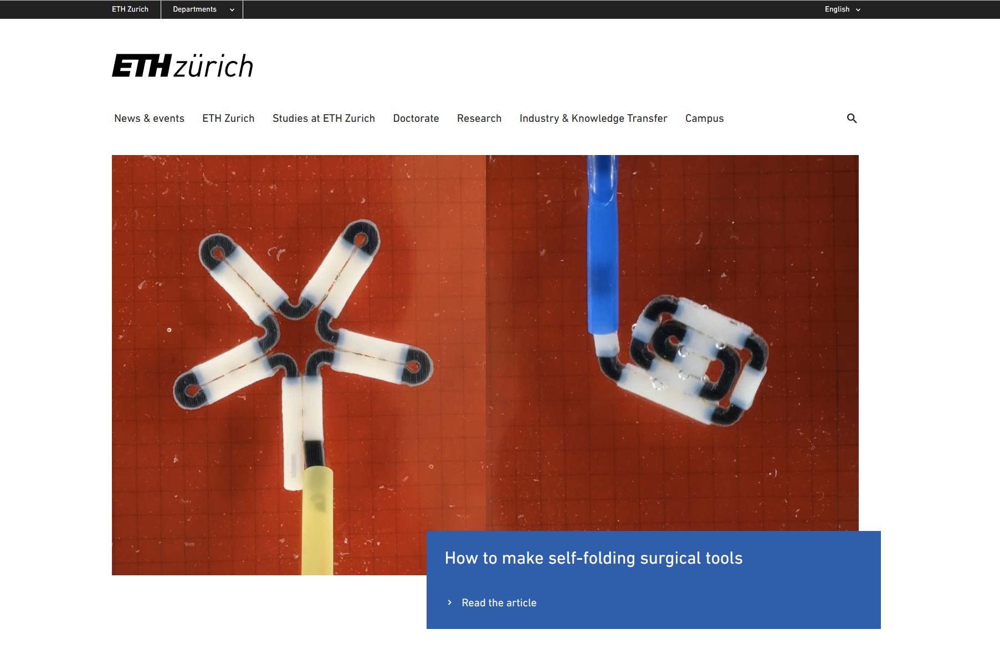
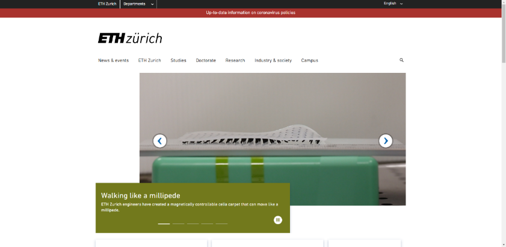
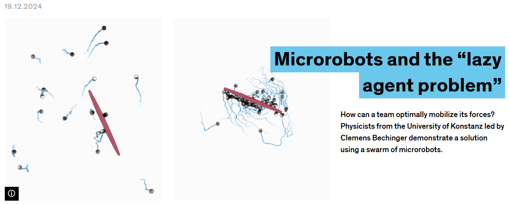

Early Career Scheme grant from the Hong Kong Research Grants Council for wearable electromagnetic actuation systems.

Assistant Professor, HKUST
Hongri "Richard" Gu
顾红日 / 顧紅日
I lead research on mechanically intelligent robotic materials, microrobots, structured magnetic materials, and biomedical devices.

Biography
Building robotic systems across scales
Hongri "Richard" Gu is a tenure-track Assistant Professor in the Division of Integrative Systems and Design at the Hong Kong University of Science and Technology. He received his Ph.D. in Mechanical Engineering and M.Sc. in Micro and Nanosystems from ETH Zurich, where he worked in the Multi-Scale Robotics Lab with Prof. Brad Nelson.
Before joining HKUST in January 2025, he was a postdoctoral associate at the University of Konstanz with Prof. Clemens Bechinger. His work connects soft robotics, active matter, magnetic materials, reinforcement learning, and minimally invasive medical devices.
Updates
Highlights
New paper in Nature Materials: non-monotonic magnetic friction from collective rotor dynamics.
New work in Science Advances on label-free robotic mitochondrial biopsy.
Teaching Creative Machine Design at HKUST.
Research
Mechanics, magnetism, and intelligence for small-scale robots
The group develops materials and robotic systems that use structure, magnetic interactions, and collective dynamics to produce useful functions in constrained environments.

Programmable magnetic assemblies
Quadrupole magnetic modules, metamaterials, and self-folding chains for reconfigurable tools and medical devices.
Microrobotic delivery
Artificial microtubules and microfluidic systems for rapid, robust transport and separation of magnetic microcargoes.

Bio-inspired soft robotics
Magnetic cilia carpets and soft intelligent structures that reveal principles of fluid transport and locomotion.

Swarm microrobots and learning
Individually controlled microrobot swarms trained with counterfactual rewards for collective transport tasks.
Publications
Selected papers
Full publication details are available on Google Scholar, ORCID, and the HKUST research portal.
-
2026
Non-monotonic magnetic friction from collective rotor dynamics
Hongri Gu*, Anton Lüders*, Clemens Bechinger*. Nature Materials 25, 767-774.
-
2025
Label-free robotic mitochondrial biopsy
Yanmei Ma, Weikang Hu, Muyang Ruan, Feixiang Bao, Xingguo Liu, Dong Sun, Hongri Gu*, Chengzhi Hu*. Science Advances 11, eadx4289.
-
2025
Development of electrochemical nanoprobe for real-time intracellular measurements of Fe2+ during ferroptosis
Yanmei Ma, Xinhao Li, Weikang Hu, Muyang Ruan, Ming Yang, Lingqian Chang, Hongri Gu, Chengzhi Hu. Microsystems & Nanoengineering 11, 134.
-
2025
The 2025 motile active matter roadmap
Gerhard Gompper, Howard Stone, et al. Journal of Physics: Condensed Matter 37, 143501.
-
2024
Counterfactual reward enables collective transport using individually controlled swarm microrobots
Veit-Lorenz Heuthe, Emanuele Panizon, Hongri Gu*, Clemens Bechinger*. Science Robotics 9, eado5888.
-
2024
Scalable high-throughput microfluidic separation of magnetic microparticles
Hongri Gu*, Yonglin Chen, Anton Lüders, Thibaud Bertrand, Emre Hanedan, Peter Nielaba, Clemens Bechinger, Bradley J. Nelson. Device, 100403.
-
2023
Self-folding soft robotic chains with reconfigurable shapes and functionalities
Hongri Gu*, Marino Möckli, Claas Ehmke, Minsoo Kim*, Matthias Wieland, Simon Moser, Clemens Bechinger, Quentin Boehler*, Bradley J. Nelson*. Nature Communications 14, 1263.
-
2022
Artificial microtubules for fast and collective transport of magnetic microcargoes
Hongri Gu*, Emre Hanedan, Quentin Boehler, Tian-Yun Huang, Arnold J. T. M. Mathijssen*, Bradley J. Nelson*. Nature Machine Intelligence 4, 678-684.
-
2020
Magnetic cilia carpets with programmable metachronal waves
Hongri Gu, Quentin Boehler, Daniel Ahmed, Bradley J. Nelson*. Nature Communications 11, 2637.
-
2019
Magnetic quadrupole assemblies with arbitrary shapes and magnetizations
Hongri Gu, Quentin Boehler, Daniel Ahmed, Bradley J. Nelson*. Science Robotics 4, eaax8977.
Teaching and Mentoring
Project-based design, robotics, and small-scale systems
Courses
- Creative Machine Design, ISDN3000B, HKUST, Fall 2025.
- Bio-inspired Mobile Robotics, University of Konstanz, Fall 2023 and Fall 2024.
- Biorobotics guest lecture, University of Konstanz, Spring 2022.
- 3D printing training and student projects, ETH Zurich, 2017-2021.
Supervision
Richard has supervised Ph.D. students, master theses, semester projects, bachelor theses, and research assistants across robotics, magnetic materials, and biomedical device research.
Openings
Prospective students and collaborators
I welcome motivated Ph.D., MPhil, undergraduate research, and postdoctoral candidates interested in microrobotics, soft robotics, active matter, medical devices, magnetic materials, and hands-on experimental systems.
For students
Please email a concise research statement, CV, transcript when relevant, and one or two papers or projects that shaped your interests.
For collaborators
I am especially interested in interdisciplinary work connecting design, robotics, materials, physics, bioengineering, and clinical translation.
Contact
Hongri "Richard" Gu
Hong Kong University of Science and Technology
Clear Water Bay, Hong Kong SAR
hongrigu@ust.hk